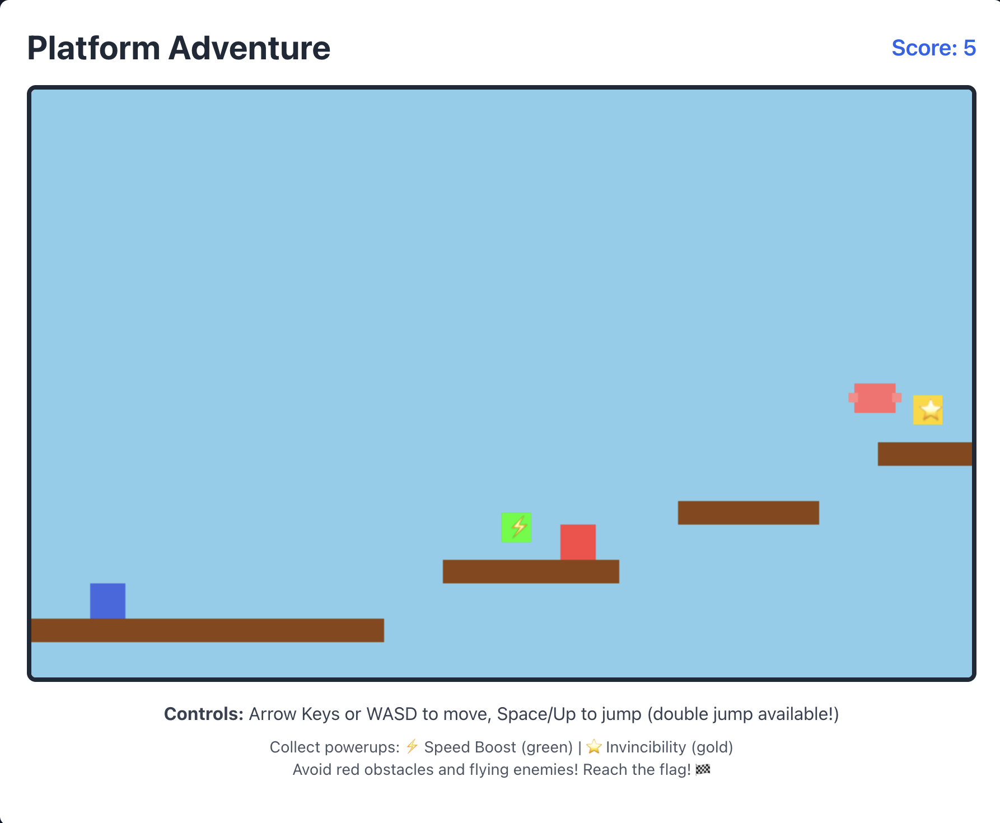
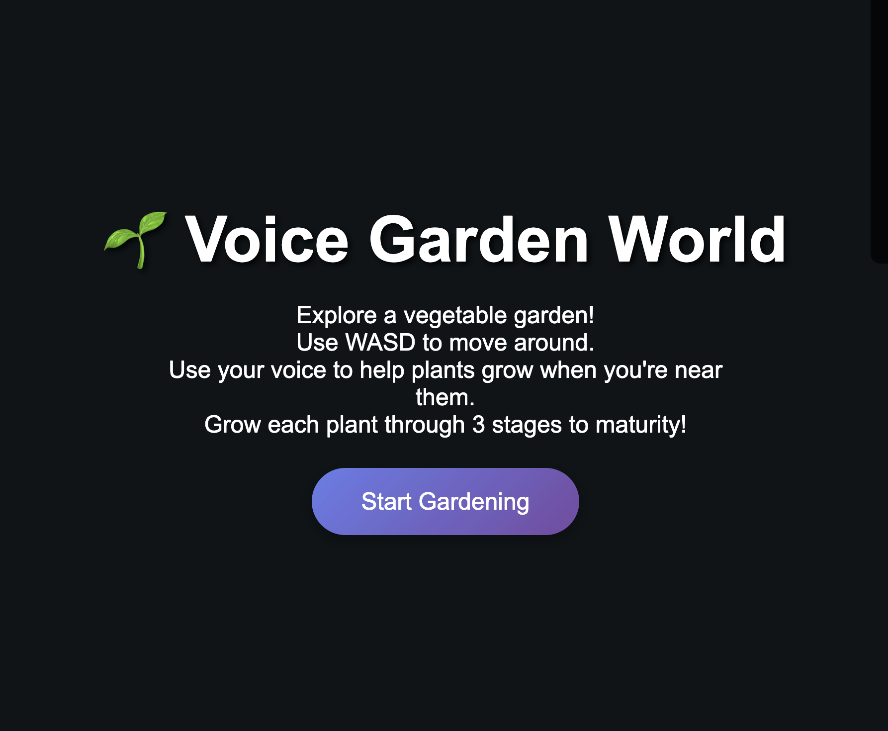
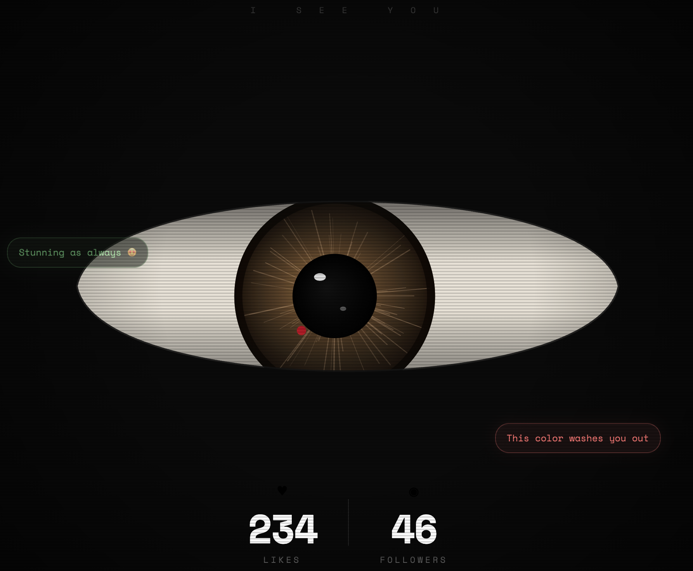
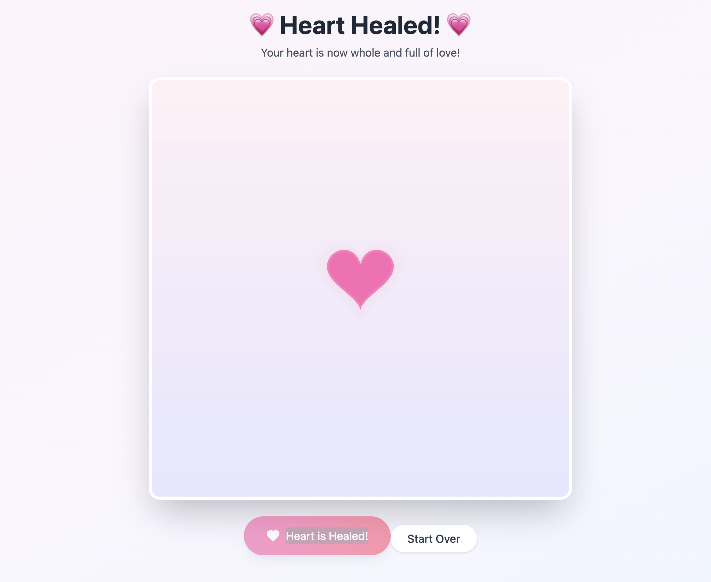
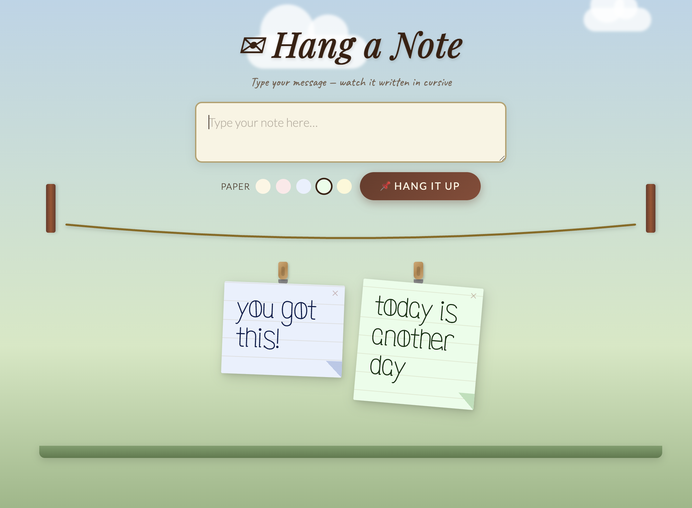
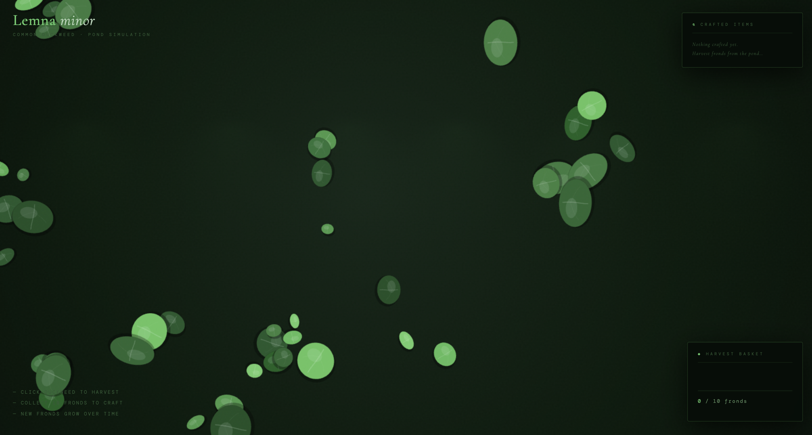
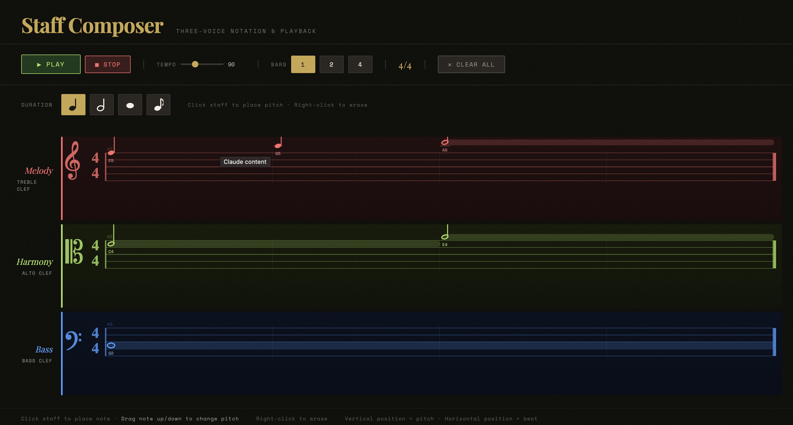

I wanted to create a visualizer that would grow as the music went on or got more intense. I uploaded my favorite songs at the moment and matched the colors according to the feeling the song gives me. I tried to pick songs with diverse themes to offer different feelings, but in general, I wanted them to feel slightly dreamy. To create this effect, I adjusted the colors to change when the music exceeds a certain threshold of intensity.
things left unsentthings left unsent explores how mental health and poor timing can lead to missed connections. The user, overcome with guilt and regret, is led through a series of texts and memories, eventually coming to the realization that not everyone or everything can wait until you're ready. During my time in college, I have found it difficult to maintain certain relationships purely because of scheduling and lack of free time/mental energy. This project is a reflection of my own personal regrets of the friendships I wasn't able to maintain for one reason or another.
HUMAN FIRSTAmidst the current political climate, I've chosen to create a project that showcases the contributions/experiences of certain communities of color through poetry. After reading the poetry, there is a section for each community with a couple of organizations to encourage people to get involved and uplift others. This project was made for individuals who belong or care about communities of color. During the current administration, I have noticed an increasing amount of indifferent/cruel attitudes towards the ICE raids, deportations, and wars as well as a general increase in racism. My goal for this project was to encourage empathy between and within these communities and act as a reminder that we are all human first before race, gender, sexual orientation, etc.
A self-portrait created using basic shapes and lines.
Drawing ToolA digital drawing tool inspired by the Japanese art of mending, sashiko.
Iterative PatternA pixel pattern that randomly generates every 2/3 second.
Music VideoA music video for Drake's song, "NOKIA"
Computational PoetryA poetry project that takes your dreams, interests, and aspirations to generate an image of yourself using your webcam.
Prompt: Build a simple platformer game that you can play on a browser that includes double jump, obstacles, and power-ups.

Vibe Coding Experiment 2Prompt: Create a 3-D world where users move using WASD keys and use their voice to interact with vegetable plants to grow them.

Vibe Coding Experiment 3Prompt: Create a website using p5.js that is a giant eye that follows that cursor with a like and follower count that rises the longer the user is on the page.

Vibe Coding Experiment 4Prompt: Create a website that allows users to heal a broken heart by sending affirmations.

Vibe Coding Experiment 5Prompt: Make a website that allows the user to type a message that gets drawn in simple cursive on a note that gets hung up.

Vibe Coding Experiment 6Prompt: Code a website using p5.js, html, or css with circles of various sizes that slowly appear, covering the screen to mimic how duckweed grows over the surface of ponds. Also allow the user to click and remove various sizes of duckweed to fill a basket.

Vibe Coding Experiment 7Prompt: Create a website where people can create notes on a staff bar that can actually be played like music. Create a bass line, a harmony line, and a melody line.

I have a love-hate relationship with vibe coding. On the surface, I appreciate how accessible vibe-coding has made web development and coding as a whole and when used responsibly, it can be a great tool to learn and brainstorm. However, at the same time, I feel that if AI and vibe-coding is introduced too early on, it can become more of a crutch rather than a tool. In general, I also find the aesthetic of vibe-coded websites to be pretty similar across the board with specific color palettes and heavy use of emojis. While AI can essentially help you create anything, it loses the small details and features that make the website feel thoughtful and personal. In the future, I don't plan on using AI to create websites, but moreso for resolving bugs or learning how to create specific animations. I also hope that AI will make progress towards reducing its energy usage and environmental impact.